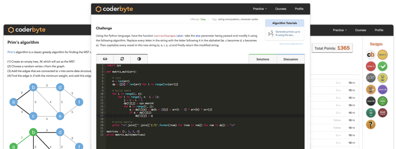
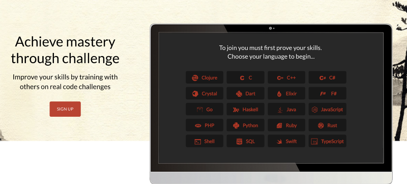
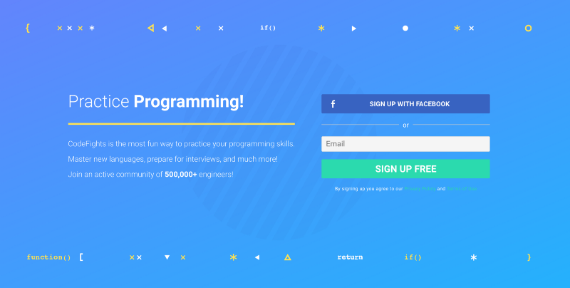
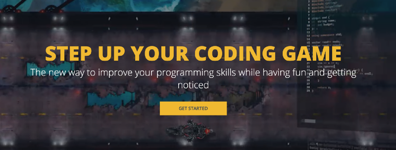
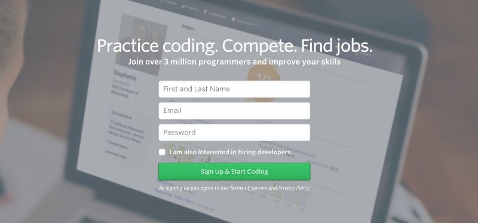
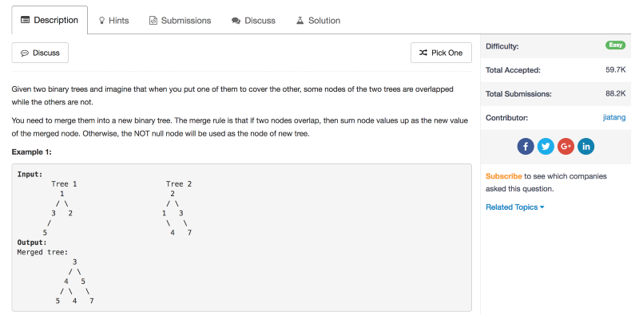
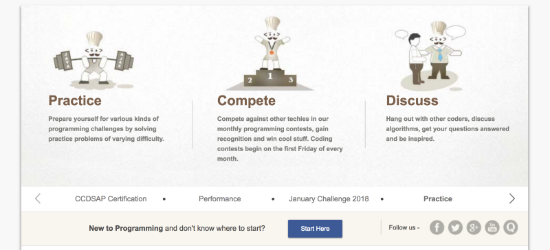
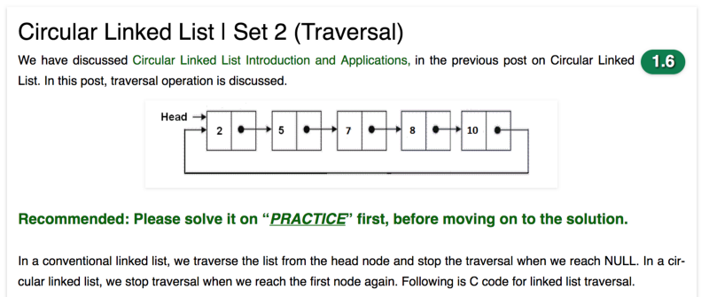
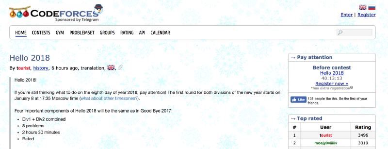

Best Coding Challenges Websites
07 April, 2018
This 2018 list features 10 websites that offer the best coding challenges and resources to help new and intermediate developers improve their skills, prepare for interviews, and progress in their careers. The ordering of the list is based on level of difficulty (beginner to advanced).
1. Coderbyte

Beginner — Intermediate
Coderbyte provides 200+ coding challenges you can solve in an online editor using 10 different programming languages. It also provides official solutions for some of the challenges along with 800,000+ user solutions. Coderbyte is recommended by the top coding bootcamps because of its collection of interview prep challenges.
Aside from coding challenges, they provide courses in Algorithms & Data Structures, Web Development, and prep courses for coding bootcamps.
2. Codewars

Beginner — Intermediate
Codewars provides a large collection of coding challenges submitted and edited by their own community. You can solve the challenges directly onlinein their editor using one of 20+ programming languages. You can view a discussion for each challenges as well as user solutions. You can earn points and climb the rankings by solving their challenges.
3. CodeFights

Beginner — Intermediate
CodeFights provides a collection of coding challenges for you to solve in their online editor and there is a forum for users to discuss the challenges. They also have a feature called Company Bots where you write code to compete against a “bot” that was programed by engineers at companies like Uber, Dropbox, and Quora.
4. CodinGame

Beginner — Intermediate
This website is different than the ones listed above because instead of simply solving coding challenges by producing a set of outputs, on CodinGame you write code to actually play a game online. It’s a great website and some of the games are very fun to watch once you’ve written your code (see example). The game graphics are nice and the editor/game UI is very smooth. Overall it’s a great website for beginners to learn coding.
5. TopCoder
Intermediate — Advanced
TopCoder is one of the original platforms for competitive programming online. It provides a list of algorithmic challenges from the past that you can complete on your own directly online using their code editor. Their popular Single Round Matches are offered a few times per month at a specific time where you compete against others to solve challenges. Here are some topicsthat their challenges may cover.
Aside from solving challenges for fun online, they offer sponsored competitions where you can win prizes for writing the best solution.
6. HackerRank

Intermediate — Advanced
HackerRank focuses on computer science topics so it provides challenges for several domains such as Algorithms, Mathematics, SQL, Functional Programming, AI, and more. You can solve all the challenge directly online (see example). They provide a discussion and leaderboard for every challenge, and most challenges come with an editorial that explains more about the challenge and how to approach it to come up with a solution.
7. LeetCode

Intermediate — Advanced
LeetCode has a collection of some of the best algorithm challenges online today. The topics they cover require knowledge of data structures such as binary trees, heaps, linked lists, etc., which is why their challenges are a bit more advanced than some other websites — but the challenges are great if used when preparing for a software engineering interview.
They also have a Mock Interview section that is specifically for job interview preparation, they host their own coding contests, and they have a section for articles to help you better understand certain problems.
8. CodeChef

Intermediate — Advanced
CodeChef is an Indian-based competitive programming website that provides hundreds of challenges. You are able to write code in their online editor and view a collections of challenges that are separated into different categories depending on your skill level (see example). They have a large community of coders that contribute to the forums, write tutorials, and take part in CodeChef’s coding competitions.
9. GeeksforGeeks

Intermediate — Advanced
GeeksforGeeks has the best collection of articles, explanations, and code solutions for algorithms and data structure topics. You can see an example here of how they break down a complex question into simpler parts, explain the solution and then provide a code solution. They also have an online editorwhere you can practice solving challenges yourself before seeing the solution.
If you are preparing for a software engineering interview, you should definitely use this website to prepare and brush up on the harder algorithm questions.
10. Codeforces

Advanced
Codeforces is a Russian-based competitive programming website that regularly hosts competitions where some of the best competitive programmers in the world compete online. If you’re a beginner coder, their challenges will most likely be too advanced for you — here are someexamples of recent challenges. Their challenges usually require advanced math and algorithms knowledge.
Honor Code.
Happy Coding!!!